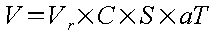

Voir exemple : Les Bassins de stockage/restitution
La mise en œuvre de cette méthode nécessite la détermination du débit de référence. Ce débit est directement dépendant de l'intensité de pluie de référence Iréf, qui doit être choisie par le projeteur : malheureusement, le choix de ce paramètre est délicat.
En effet, cette méthode a été mise au point par l'ATV, en étudiant uniquement le cas du Land « Baden-Württemberg ». Ainsi, depuis 1973, l'intensité de pluie de référence est fixée à 15 l/s/ha dans cette région, indépendamment de la qualité et du débit des cours d'eau. De mêmes études ont été effectuées dans le Bas-Rhin et ont amené, vers la fin des années 1980, la DDAF à recommander une valeur de 10 à 15 l/s/ha. Cependant, pour les autres régions, aucune étude n'a été effectuée pour valider la méthode utilisée dans ce module : l'extension de son utilisation n'est donc pas garantie.
Mais quelques indicateurs peuvent aider dans la détermination de l'intensité de pluie de référence. Elle doit être fondée sur l'analyse très détaillée de différents paramètres :
Fréquence, intensité, durée des pluies,
Objectifs de qualité des cours d'eau,
Débit d'étiage des cours d'eau,
Capacité d'auto-épuration des cours d'eau,
Charge de l'effluent,
Capacité des réseaux.
C'est donc le projeteur qui déterminera indirectement le volume du bassin de stockage/restitution. Le volume se déduit :

|
C |
le coefficient de ruissellement en % |
|
S |
la surface en ha |
|
aT |
un facteur sans dimension lié au temps de concentration Tc (cf. Tableau « Bassin de stockage/restitution - Facteur aT » ), |
|
Vr |
le volume relatif du bassin lié à l'intensité de pluie de référence en m3/ha (cf. graphique « Bassin de stockage/restitution - Volume relatif » ) |
|
V |
en m3 |
|
Temps de concentration Tc (min) |
Facteur aT |
|
10 |
1.25 |
|
15 |
1.48 |
|
20 |
1.63 |
|
25 |
1.74 |
|
30 |
1.82 |
|
35 |
1.88 |
|
40 |
1.93 |
|
50 |
2.02 |
|
60 |
2.06 |
|
80 |
2.12 |
|
100 |
2.17 |
|
120 |
2.20 |
|
180 |
2.25 |
Tableau 2.7. Bassin de stockage/restitution - Facteur aT

|
C |
le coefficient de ruissellement en % |
|
S |
la surface en ha |
|
QPluieAval |
le débit de pluie admissible à l'aval du bassin |
D'autre part, dans la directive allemande destinée au Land Baden-Württemberg, des limites d'application sont indiquées pour maintenir une bonne efficacité de l'installation. Les principales contraintes hydrauliques sont :
Une charge hydraulique (débit ramené à la surface du bassin) inférieure à 10 m3/h.m2,
Un temps de séjour minimum, fonction de l'intensité de pluie de référence donnée par le tableau 2, qui suit :
|
Intensité de pluie de référence en l/s.ha |
Temps de séjour minimum en min |
|
30 |
10 |
|
15 |
15 |
|
10 |
20 |
Tableau 2.8. Temps de séjour minimum
Un temps de séjour supérieur à 20 minutes n'apporte aucun soulagement notable à l'émissaire,
La vitesse horizontale d'écoulement ne doit pas dépasser 5 cm/s.